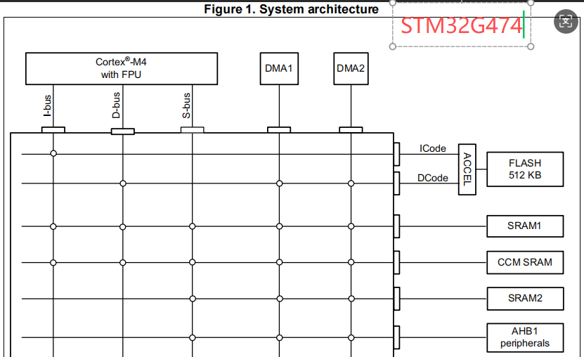
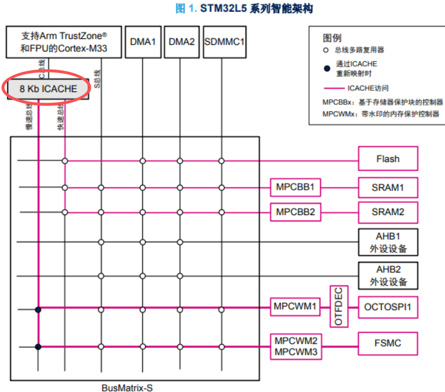
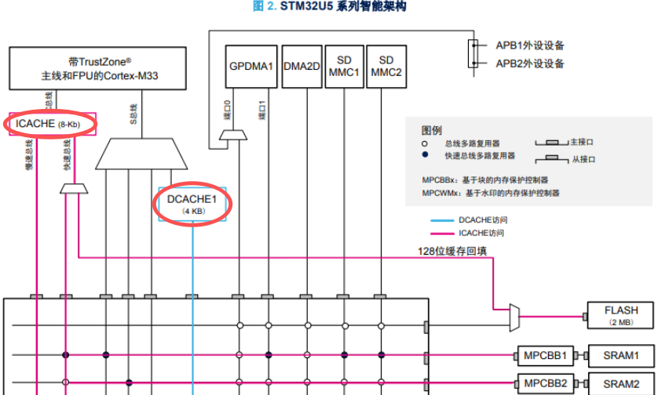
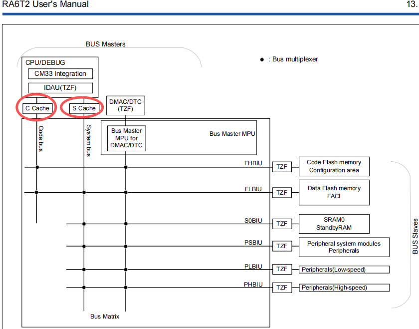
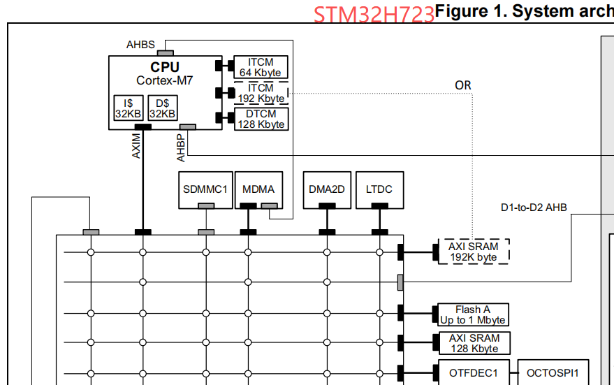
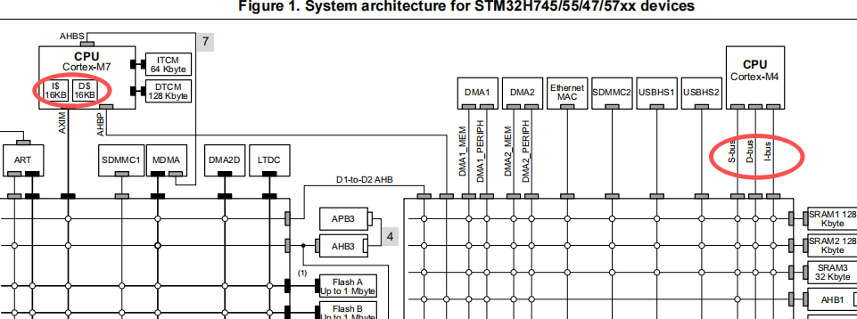
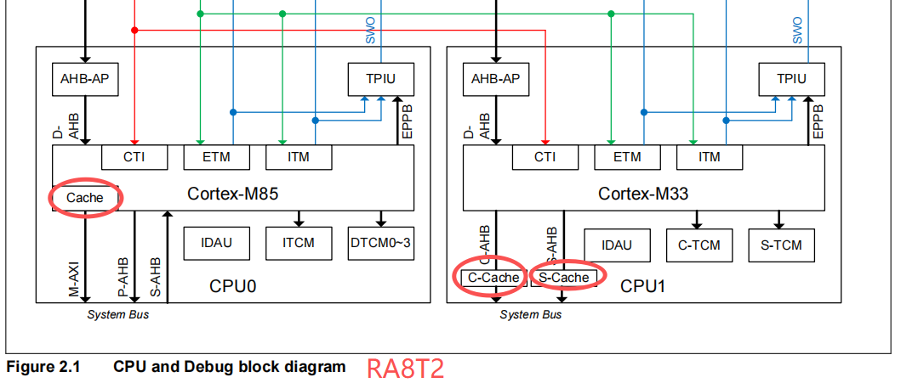
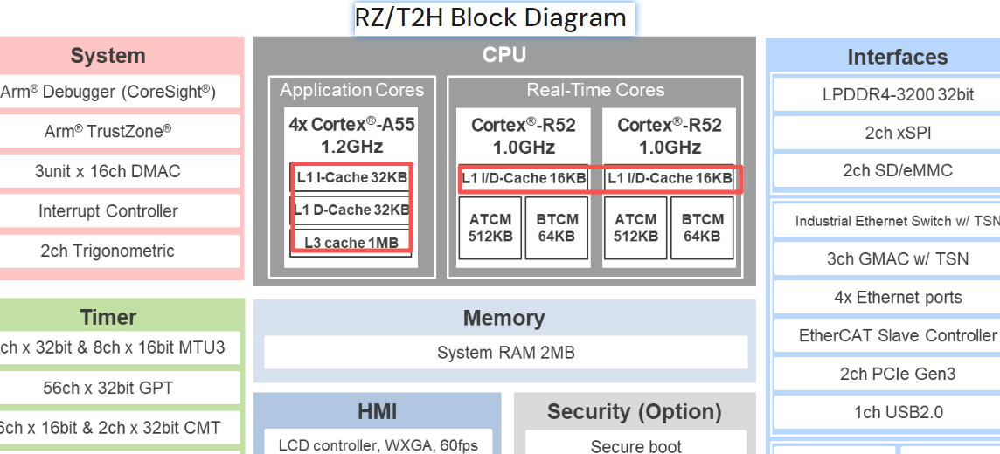
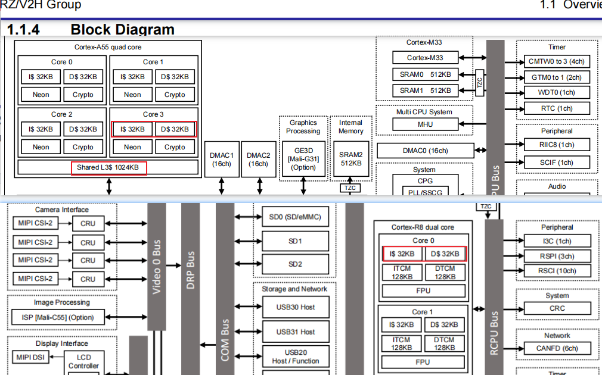
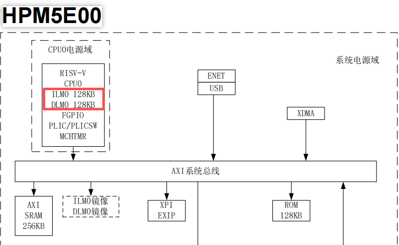

嵌入式科普(43)一文理解嵌入式中Cache的关键点
一、概述
- 简介Cache，对比CM、CR、CA内核中cache的区别、用法、注意事项
- 本文重点是对Cache相关的关键概念的理解
二、资料来源
三、为什么需要Cache
Cache是位于CPU和主内存之间的小容量高速存储器，主要作用是缓解CPU和内存之间的速度差异。现代CPU的速度远远超过内存访问速度，如果没有Cache，CPU大部分时间都在等待内存数据，性能会大幅下降。
graph LR
A[CPU Core<br>控制器<br>CM0/CM3] --> B[系统总线]
B --> C[Flash Memory<br>程序存储]
B --> D[SRAM<br>数据存储]
B --> E[外设寄存器]
style A fill:#e3f2fd
style C fill:#fff3e0
style D fill:#e8f5e8
style E fill:#fce4ec
graph LR
A[CPU Core<br>控制器<br>CM7/CM85/CR52] --> B[Cache]
B --> C[RAM]
subgraph "内存层次结构"
B
C
end
style B fill:#fff3e0
style C fill:#f3e5f5
graph LR
A[CPU Core<br>处理器<br>CA] --> B{L1 Cache<br>一级缓存}
subgraph "内存层次结构"
B --> C{L2 Cache<br>二级缓存}
C --> D{L3 Cache<br>三级缓存}
D --> E[Main Memory<br>主内存]
E --> F[Storage<br>存储设备]
end
style A fill:#e3f2fd
style B fill:#fff3e0
style C fill:#e8f5e8
style D fill:#fce4ec
style E fill:#f3e5f5
style F fill:#e0f2f1
ARM内核在Cache设计上有着显著差异：
- Cortex-M0/M3：通常无Cache，依赖Flash加速器
- Cortex-M4：无集成Cache，可能由芯片厂商实现
- Cortex-M33：可选Cache，通常作为外设实现
- Cortex-M7/M85：集成Cache，通过SCB寄存器管理
四、ARM Cortex内核Cache对比
| 特性 |
Cortex-M4 |
Cortex-M33 |
Cortex-M7 |
Cortex-M85 |
Cortex-R52 |
Cortex-A55 |
RISC-V (MCU类) |
RISC-V (MPU类) |
| 架构类型 |
专有ISA |
专有ISA |
专有ISA |
专有ISA |
专有ISA |
专有ISA |
开源ISA |
开源ISA |
| 架构版本 |
Armv7-M |
Armv8-M |
Armv7-M |
Armv8.1-M |
Armv8-R |
Armv8.2-A |
RV32IMC / RV64IMC |
RV64GC |
| Cache 位置 |
❌ 无集成 |
❌ 无集成 |
✅ 内核集成 |
✅ 内核集成 |
✅ 内核集成 |
✅ 内核集成 |
实现特定 |
✅ 内核集成 |
| L1 I-Cache |
❌ 无 |
❌ 无 |
✅ 0-64KB |
✅ 0-64KB |
✅ 4-64KB |
✅ 16-64KB |
✅ 可选(4-64KB) |
✅ 通常32-64KB |
| L1 D-Cache |
❌ 无 |
❌ 无 |
✅ 0-64KB |
✅ 0-64KB |
✅ 4-64KB |
✅ 16-64KB |
✅ 可选(4-64KB) |
✅ 通常32-64KB |
| L2 Cache |
❌ 无 |
❌ 无 |
❌ 无 |
❌ 无 |
✅ 可选 |
✅ 可选 |
❌ 通常无 |
✅ 通常128KB-2MB |
| Cache 管理 |
厂商实现 Flash-Cache |
厂商实现 I/D-Cache |
SCB寄存器 |
SCB寄存器 |
复杂一致性 |
MMU管理 |
CSR寄存器+定制 |
MMU+CSR寄存器 |
| 一致性协议 |
- |
- |
- |
- |
AMBA ACE |
AMBA CHI |
TileLink(常见) |
TileLink/定制 |
| 管理指令 |
- |
- |
SCB访问 |
SCB访问 |
CP15指令 |
CP15指令 |
fence/cbo指令 |
fence/cbo指令 |
| ECC 支持 |
❌ 无 |
❌ 无 |
❌ 无 |
✅ 可选 |
✅ 强制 |
✅ 可选 |
实现特定 |
✅ 通常支持 |
| TCM 支持 |
❌ 无 |
❌ 无 |
✅ 0-16MB |
✅ 0-16MB |
✅ 紧耦合内存 |
❌ 无 |
实现特定 |
❌ 通常无 |
| 设计灵活性 |
❌ 低 |
❌ 低 |
❌ 低 |
❌ 低 |
❌ 低 |
❌ 低 |
✅ 高 |
✅ 高 |
| 典型芯片 |
STM32F4 STM32G4 |
STM32U/H5 RA6 |
STM32H7 |
RA8系列 |
工业/汽车 |
网关/HMI/AI |
HPM |
JH7110, K230 |
4.1 读操作流程
graph TD
A[CPU 读请求] --> B{Cache 命中?}
B -->|命中| C[从 Cache 读取数据]
C --> D[快速返回数据<br>1-3 周期]
B -->|未命中| E[触发 Cache Line 加载]
E --> F[从 RAM 读取整个 Cache Line]
F --> G[数据存入 Cache]
G --> H[返回请求的数据]
H --> I[较慢返回<br>10-100+ 周期]
4.2 写操作策略流程
写通 vs 写回策略
graph TD
A[CPU 写请求] --> B{写策略}
B -->|写通 Write-through| C[同时写入 Cache 和 RAM]
C --> D[数据一致性高]
D --> E[性能较低<br>每次写都访问RAM]
B -->|写回 Write-back| F[只写入 Cache]
F --> G[标记 Cache Line 为脏]
G --> H{何时写回RAM?}
H -->|替换时| I[Cache Line 被替换时写回]
H -->|手动清理| J[执行 Clean 操作时写回]
I --> K[性能较高]
J --> K
4.3 Cache Line 操作流程
graph TD
A[Cache Line 操作] --> B{操作类型}
B -->|加载| C[从 RAM 读取连续数据块]
C --> D[典型大小: 32/64 字节]
D --> E[即使只需要 1 字节]
B -->|替换| F{替换策略}
F -->|LRU| G[替换最近最少使用的行]
F -->|随机| H[随机选择一行替换]
G --> I{被替换行状态?}
H --> I
I -->|干净| J[直接丢弃]
I -->|脏| K[先写回 RAM 再替换]
4.4 写分配策略流程
graph TD
A[CPU 写未命中] --> B{写分配策略}
B -->|写分配<br>Write Allocation| C[先加载 Cache Line]
C --> D[然后写入 Cache]
D --> E[标记为脏]
E --> F[后续写入更快]
B -->|非写分配<br>No-Write Allocation| G[直接写入 RAM]
G --> H[不修改 Cache]
H --> I[适合一次性写入]
4.5 Clean 操作流程
graph TD
A[执行 Clean 操作] --> B{检查 Cache Line 状态}
B -->|脏数据| C[将数据写回 RAM]
C --> D[清除脏标记]
D --> E[Cache 和 RAM 一致]
B -->|干净数据| F[无需操作]
E --> G[使用场景:<br>CPU→DMA 数据传输]
F --> G
G --> H[DMA 能读取到最新数据]
4.6 Invalidate 操作流程
graph TD
A[执行 Invalidate 操作] --> B[丢弃 Cache 中的数据副本]
B --> C[标记 Cache Line 为无效]
C --> D[下次访问时从 RAM 重新加载]
D --> E[使用场景:<br>DMA→CPU 数据传输]
E --> F[CPU 能读取到 DMA 写入的新数据]
4.7 完整的数据一致性维护流程
graph TD
A[开始数据传输] --> B{数据传输方向}
B -->|CPU 写 → 外设读| C[CPU 准备数据]
C --> D[数据写入 Cache]
D --> E[执行 Clean 操作]
E --> F[确保数据写入 RAM]
F --> G[启动外设读取]
B -->|外设写 → CPU 读| H[外设写入数据到 RAM]
H --> I[执行 Invalidate 操作]
I --> J[丢弃 Cache 中的旧数据]
J --> K[CPU 从 RAM 读取新数据]
B -->|双向传输| L[执行 Clean + Invalidate]
L --> M[先确保数据一致性]
M --> N[再准备接收新数据]
4.8 实际应用场景示例
DMA 传输场景
graph LR
subgraph "发送数据 (CPU → DMA)"
A[CPU 填充缓冲区] --> B[执行 Clean]
B --> C[DMA 从 RAM 读取正确数据]
end
subgraph "接收数据 (DMA → CPU)"
D[DMA 写入 RAM] --> E[执行 Invalidate]
E --> F[CPU 读取最新数据]
end
4.9 实际代码
| 场景 |
操作 |
目的 |
代码示例 |
| CPU → 外设 |
Clean |
确保外设看到最新数据 |
SCB_CleanDCache_by_Addr() |
| 外设 → CPU |
Invalidate |
确保 CPU 看到外设更新 |
SCB_InvalidateDCache_by_Addr() |
| 双向传输 |
Clean+Invalidate |
完整的所有权转移 |
SCB_CleanInvalidateDCache_by_Addr() |
| 代码更新 |
Invalidate ICache |
确保执行最新指令 |
SCB_InvalidateICache() |
| 多核数据同步 |
内存屏障 |
保证访问顺序 |
__DSB(), __DMB(), __ISB() |
// 常用Cache操作函数
void dmac_clean_range(const void *start, const void *end);
void dmac_inv_range(const void *start, const void *end);
void dmac_flush_range(const void *start, const void *end);
// 内存屏障
dmb(ish); // 数据内存屏障
dsb(sy); // 数据同步屏障
isb(); // 指令同步屏障
// 高级API
dma_sync_single_for_device() // DMA到设备前
dma_sync_single_for_cpu() // DMA后CPU访问前
4.10 总结
| 类别 |
术语 |
英文 |
解释 |
应用场景 |
| 读操作 |
读命中 |
Read Hit |
CPU 需要的数据在 Cache 中 |
快速数据访问，1-3 周期 |
| 读操作 |
读未命中 |
Read Miss |
CPU 需要的数据不在 Cache 中 |
触发缓存行填充 |
| 读操作 |
缓存行填充 |
Cache Line Fill |
从内存加载整个 Cache Line |
读未命中时的处理 |
| 写操作 |
写通 |
Write-through |
同时写入 Cache 和内存 |
需要强一致性的场景 |
| 写操作 |
写回 |
Write-back |
只写入 Cache，延迟写回内存 |
高性能写入场景 |
| 写操作 |
脏数据 |
Dirty Data |
已修改但未写回内存的数据 |
Write-back 策略特有 |
| 分配策略 |
写分配 |
Write-allocate |
写未命中时先加载数据到 Cache |
具有局部性的数据 |
| 分配策略 |
非写分配 |
No-write-allocate |
写未命中时直接写入内存 |
一次性写入数据 |
| 维护操作 |
清理 |
Clean |
将脏数据写回内存 |
CPU→DMA 数据传输 |
| 维护操作 |
无效化 |
Invalidate |
丢弃 Cache 中的数据 |
DMA→CPU 数据传输 |
| 维护操作 |
清理+无效化 |
Clean+Invalidate |
先写回再丢弃 |
双向数据交换 |
五、常见芯片架构










六、总结
- 现代CPU的速度远远超过内存访问速度，需要Cache提升性能
- CM0 CM3通常没有Cache；CM44 CM33可能有FlashCache和外设Cache；CM7 CM85等Cache在内核中，通过SCB操作；CA等内核有多级Cache，通过Linux内核API操作。
- 当数据在CPU和其他主控（DMA、其他CPU核心、外设）之间共享时，就需要考虑Cache一致性问题，通常办法如下：
- 1.使用SCB API、内核API Clean/Invalidate处理
- 2.在CM7 CM85 CR52等具备多块内存的芯片上，使用非共享内存解决一致性问题
- 3.Cache Though写通可以简单的解决一致性问题，但会降低性能